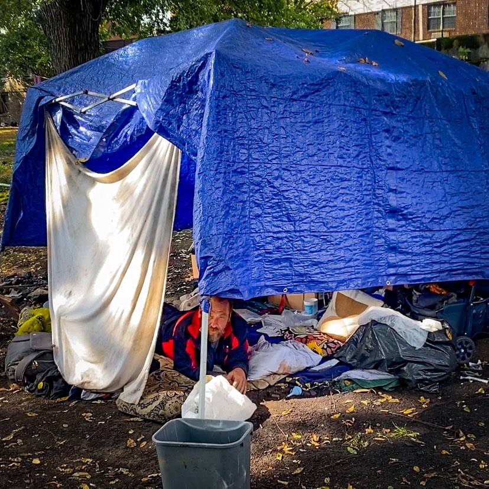

Timeline photos
Crystal gave birth to a baby in this tent in Akron Ohio late last week.
I have conflicting feelings about the whole thing.
On one hand, why the hell are women having to give birth in tents in 21st century America? I thought that kind of thing only happened in third world countries.
On the other hand, I doubt there was any place we could have offered her to go that she would have taken us up on.
One group tried to get her to go to IBH. That’s a drug rehab facility. I can see why she might not want to do that. But I’m not sure she would have gone anywhere. Friends in Tents got her to go to the hospital a couple weeks ago. That was an amazing accomplishment. I asked her repeatedly if I could take her to the hospital. She always said no.
Aubrey took 2 babies to term while living in a tent. Kristen and I begged her to move into our house. She wouldn’t do it.
Sometimes people can’t handle being in a house or a shelter.
I see only one reasonable solution in these cases: let us take care of them in the woods.
This tent you see here is not a tent. It’s some blankets on the ground covered by a canopy. But that is an upgrade for Crystal. For most of her pregnancy all she had was a bench in a field. No tarp, no blankets, no covering.
I am under court order to not allow anyone to put a tent on my land. I’ll go to jail if I do so. But they want to expand that. If they can prove that I am still giving tents to people elsewhere they’d like to make it so they can put me in jail if I give a tent to anyone ANYWHERE in Akron. That was the original order they proposed.
So I become a criminal if I help anyone have shelter in Akron Ohio.
How have we gotten so twisted in society that I become the criminal if I help shelter a pregnant woman? How is THAT the crime? Shouldn’t the crime be to not help her?